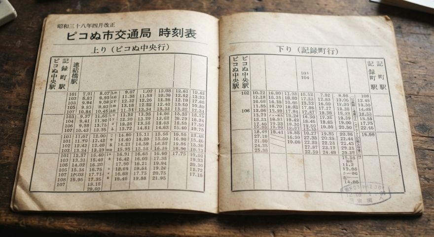

資料概要
| 資料名 | 昭和38年 ピコぬ市交通局 時刻表 |
|---|---|
| 発行 | ピコぬ市交通局 |
| 発行年 | 昭和38年（1963年） |
| 対象路線 | ピコぬ市交通局線 |
| 駅数 | 3駅 |
| 資料番号 | 交-時-0038 |
| 所蔵 | ピコぬ市交通局 交通資料室 |
当時の時刻表

昭和38年の交通局開業当時に発行された時刻表です。 当時の運行状況を知ることができる資料として、交通資料室で保存しています。
時刻表について
開業当時のピコぬ市交通局では、 ピコぬ中央駅・連結橋駅・記録町駅の3駅を結ぶ1路線が運行されていました。
本資料には、現在とは異なる時刻や運行に関する案内が記載されています。 駅数や路線の基本的な構成は現在にも引き継がれています。
資料から見る当時の交通
- 開業当時から3駅を結ぶ1路線で運行されていました。
- 現在とは異なる時刻設定が行われていました。
- 駅と駅の間を徒歩で移動することも想定されていました。
- 当時の案内には、現在使用されていない表記があります。
資料の状態
| 保存状態 | 良好 |
|---|---|
| 紙質 | 経年による変色あり |
| 印刷 | 一部かすれあり |
| 閲覧 | 公開 |
資料室からのお知らせ
本資料は歴史資料として公開しているものであり、 現在の運行時刻を示すものではありません。 現在の運行については、ピコぬ市交通局の現行案内をご確認ください。
資料室メモ
本資料に記載された一部の表記については、 現在の資料からは具体的な意味を特定できないものがあります。
交通資料室では、当時の記録をそのまま保存することも、 交通局の歩みを記録するうえで重要な作業と考えています。